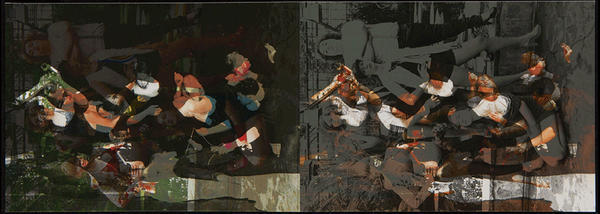
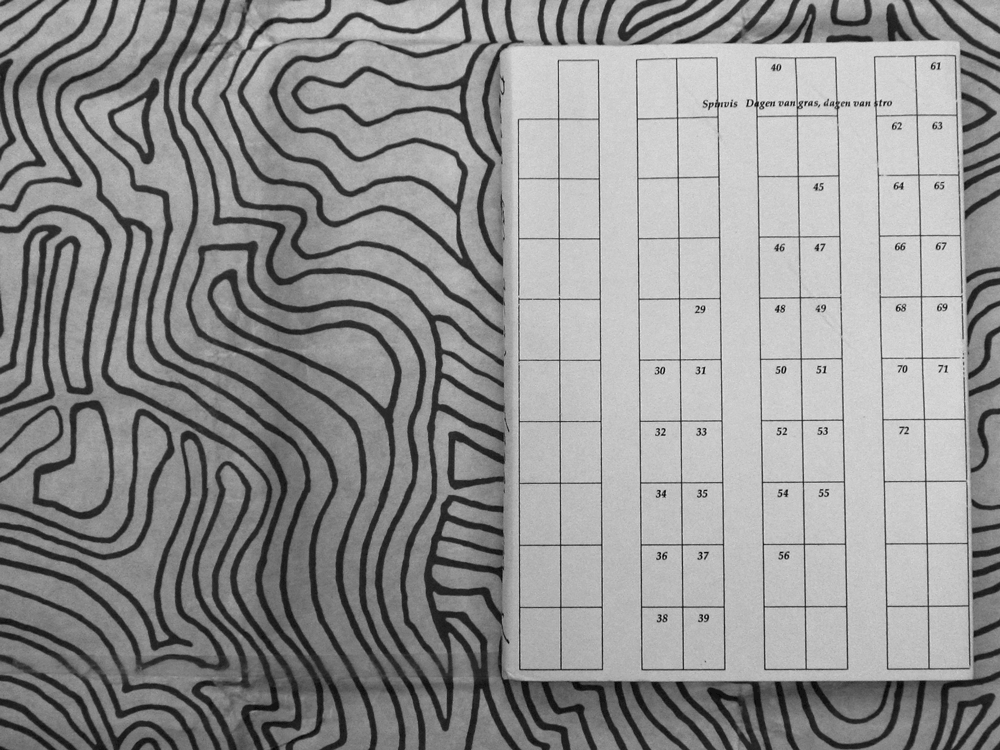
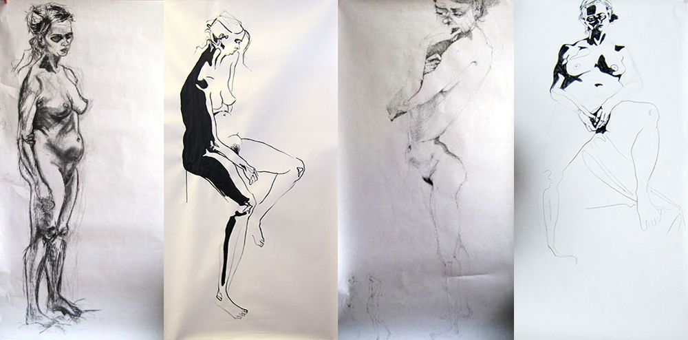

Een poster voor een driedelige performanceavond en een voor een dubbele film vertoning. Gemaakt aan LUCA School of Arts Gent 2015-16.
Bijdragen aan een vriendenboek, beantwoord op de vragen wat is je favoriete muziek, favoriete object, denkbeeldige vriend, favoriete cocktail en favoriete einde. Gemaakt aan LUCA School of Arts Gent 2015-16.
Modeltekeningen gemaakt aan LUCA School of Arts Gent in 2015-16.
Visitenkaarten voor Agency for Contemporary Artistic Discourse & Collaboration gemaakt in 2015.
Modeltekeningen gemaakt aan LUCA School of Arts Gent in 2014-15.
Website geïnspireerd op het Griekse mythologische personage Perseus. Gemaakt aan LUCA School of Arts Gent in 2014-15.
Platenhoezen voor Tangerine Dream en Andre Laplante. Lettertype is hiervoor gedigitaliseerd en aangepast om ruimtelijkheid van de muziek te verbeelden. Gemaakt aan LUCA School of Arts Gent in 2014-15.
Cetacea et Cetera, een wunderkammer in boekvorm. Over structuren, patronen, ordening, onderwaterleven etcetera. Gemaakt aan LUCA School of Arts Gent in 2014-15.

Flyer voor Ontroerend Goed gemaakt in Antwerpen in 2014.

Dagen van gras, dagen van stro, het nummer 'Dagen van gras, dagen van stro' van Spinvis geïnterpreteerd als boek. Gemaakt aan Koninklijke Academie voor Schone Kunsten Antwerpen in 2013-14.

Modeltekeningen gemaakt aan Koninklijke Academie voor Schone Kunsten Antwerpen in 2013-14.
Modeltekeningen gemaakt aan Artez Arnhem in 2011-12.